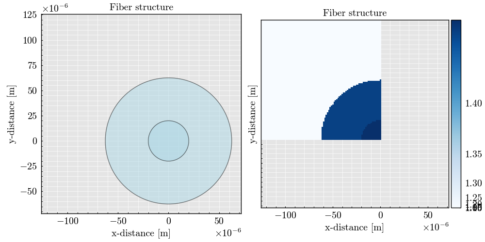
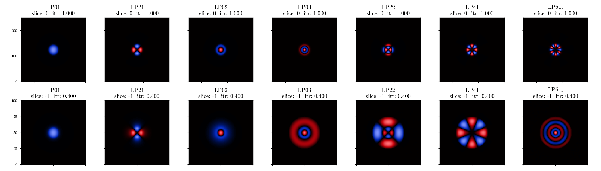

Note
Go to the end to download the full example code.
Propagation constant: DCFC#
Imports#
import numpy
from SuPyMode.workflow import Workflow, fiber_catalogue, Boundaries
import PyFiberModes
from PyFiberModes.fiber import load_fiber
from PyFiberModes.__future__ import get_normalized_LP_coupling
import matplotlib.pyplot as plt
import itertools
wavelength = 1550e-9
fiber_name = 'test_multimode_fiber'
scale_factor = 4
Generating the fiber structure#
Here we define the cladding and fiber structure to model the problem
fiber = fiber_catalogue.load_fiber(fiber_name, wavelength=wavelength, remove_cladding=False)
fiber_list = [fiber]
Defining the boundaries of the system
boundaries = [
Boundaries(right='symmetric', bottom='symmetric'),
]
Generating the computing workflow#
Workflow class to define all the computation parameters before initializing the solver
workflow = Workflow(
fiber_list=fiber_list, # List of fiber to be added in the mesh, the order matters.
fusion_degree='auto', # Degree of fusion of the structure if applicable.
wavelength=wavelength, # Wavelength used for the mode computation.
resolution=180, # Number of point in the x and y axis [is divided by half if symmetric or anti-symmetric boundaries].
x_bounds="left", # Mesh x-boundary structure.
y_bounds="top", # Mesh y-boundary structure.
air_padding_factor=4.0,
boundaries=boundaries, # Set of symmetries to be evaluated, each symmetry add a round of simulation
n_sorted_mode=7, # Total computed and sorted mode.
n_added_mode=6, # Additional computed mode that are not considered later except for field comparison [the higher the better but the slower].
plot_geometry=True, # Plot the geometry mesh before computation.
debug_mode=1, # Print the iteration step for the solver plus some other important steps.
auto_label=True, # Auto labeling the mode. Label are not always correct and should be verified afterwards.
itr_final=0.4, # Final value of inverse taper ratio to simulate
index_scrambling=0, # Scrambling of refractive index value in order to lift mode degeneracy [useful for some analysis]
n_step=100
)
superset = workflow.get_superset()
superset.label_supermodes('LP01', 'LP21', 'LP02', 'LP03', 'LP22', 'LP41')
superset.plot(plot_type='field')
itr_list = superset.model_parameters.itr_list
- 
- 
Computing the analytical values using FiberModes solver.
initial_fiber = load_fiber(
fiber_name=fiber_name,
wavelength=wavelength,
add_air_layer=False
)
Preparing the figure
figure, ax = plt.subplots(1, 1)
ax.set(
xlabel='Inverse taper ratio',
ylabel='Effective index'
)
def get_index_pyfibermodes(mode, itr_list, fiber):
analytical = numpy.empty(itr_list.shape)
for idx, itr in enumerate(itr_list):
tapered_fiber = fiber.scale(factor=itr)
analytical[idx] = tapered_fiber.get_effective_index(mode=mode)
return analytical
for idx, mode in enumerate(['LP01', 'LP02', 'LP03']):
color = f"C{idx}"
supymode_mode = getattr(superset, mode)
ax.scatter(
itr_list,
supymode_mode.index.data,
label=str(supymode_mode),
color=color,
s=80,
linestyle='-'
)
analytical = get_index_pyfibermodes(mode=getattr(PyFiberModes, mode), itr_list=itr_list, fiber=initial_fiber)
ax.plot(
itr_list,
analytical,
label=str(mode),
linestyle='-',
linewidth=2,
color=color
)
plt.show()

Preparing the figure
figure, ax = plt.subplots(1, 1)
ax.set(
xlabel='Inverse taper ratio',
ylabel='Normalized coupling'
)
[Text(0.5, 33.0, 'Inverse taper ratio'), Text(33.0, 0.5, 'Normalized coupling')]
Computing the analytical values using FiberModes solver.
initial_fiber = load_fiber(
fiber_name=fiber_name,
wavelength=wavelength,
add_air_layer=False
)
def get_normalized_coupling_pyfibermodes(mode_0, mode_1, itr_list, initial_fiber):
analytical = numpy.empty(itr_list.shape)
for idx, itr in enumerate(itr_list):
tapered_fiber = initial_fiber.scale(factor=itr)
analytical[idx] = get_normalized_LP_coupling(fiber=tapered_fiber, mode_0=mode_0, mode_1=mode_1)
return analytical
for idx, (mode_0, mode_1) in enumerate(itertools.combinations(['LP01', 'LP02', 'LP03'], 2)):
color = f"C{idx}"
analytical = get_normalized_coupling_pyfibermodes(
mode_0=getattr(PyFiberModes, mode_0),
mode_1=getattr(PyFiberModes, mode_1),
itr_list=itr_list[::2],
initial_fiber=initial_fiber
)
ax.plot(
itr_list[::2],
abs(analytical),
label='Analytical',
linestyle='-',
linewidth=2,
color=color
)
simulation = getattr(superset, mode_0).normalized_coupling.get_values(getattr(superset, mode_1))
ax.scatter(
superset.model_parameters.itr_list,
abs(simulation),
color=color,
s=80,
linestyle='-',
label=mode_0 + '-' + mode_1
)
plt.show()
# -
Total running time of the script: (0 minutes 34.160 seconds)